NEW MOVIES TRAILER

Huyền Thoại Thập Luân Trailer
Chủng Tộc Bất Tử Trailer

Spider Man: No Way Home Trailer

What If? Trailer

Loki Trailer

The falcon & The winter soldier trailer

WandaVision Trailer

Blackwidow Trailer
Năm 1942, Steve Rogers là một người gầy nhỏ, bạn thân của anh là Bucky. Do thể chất của mình, Rogers bị từ chối tham gia vào quân đội Thế chiến II nhưng vẫn anh kiên trì. Tiến sĩ Abraham Erskine, người đứng đầu chương trình Siêu chiến binh, tình cờ nghe được Rogers và cho rằng anh là một ứng cử viên phù hợp. Rogers cuối cùng đã được chọn cho chương trình và trở nên cao lớn, cơ bắp, siêu khỏe, nhanh nhẹn,... .Trước đó một thời gian, một sĩ quan Đức Quốc xã, Johann Schmidt (cũng là một đặc nhiệm Hydra), đã trải qua một phiên bản không hoàn hảo của chương trình Super Soldier.
Schmidt có được trong tay khối Tesseract. Ông ta dự định khai thác sức mạnh của nó để chế tạo vũ khí và phá hủy toàn bộ nước Mỹ. Rogers bây giờ được gọi là Captain America. Kỹ sư trưởng, Howard Stark (cha của Tony Stark), đưa cho anh một chiếc khiên Vibranium.
Trong một nhiệm vụ chống Hydra trên một chuyến tàu, Bucky đã rơi xuống khỏi tàu. Cap lên máy bay của Red Skull. Trong quá trình của cuộc đụng độ, Red Skull chạm vào khối Tesseract, thứ mở ra một lỗ sâu và hút ông ta vào. Khối Tesseract rơi xuống đại dương, và Captain America hy sinh bản thân bằng cách đâm máy bay xuống Bắc Cực và bị đóng băng trong 70 năm.
Tony Stark cuối cùng thừa kế công ty của cha mình. Trong những năm qua, Stark Industries đã sản xuất và cung cấp vũ khí trên khắp thế giới. Obadiah Stane, một nhân viên cấp cao của công ty, đã buôn bán trái phép vũ khí. Trong một lần biểu diễn tên lửa Jerico của Tony, anh đã bị bọn khủng bố bắt giữ.
Trong quá trình này, Tony bị thương ở ngực bởi các mảnh đạn từ vụ nổ. Trong hang động, nơi Tony bị giam giữ, là một người khác bị giam giữ, Tiến sĩ Yinsen, người đã cấy một nam châm điện vào ngực của Tony để giữ các mảnh vỡ ra khỏi trái tim của anh ta.
Những kẻ khủng bố yêu cầu Tony chế tạo tên lửa cho chúng, nhưng Tony và Yinsen đã chế tạo một bộ đồ bọc thép chạy bằng lò phản ứng hồ quang. Yinsen hy sinh bản thân và Tony xông lên phá hủy trại khủng bố.
Tony được tìm thấy bởi người bạn của mình, Đại tá James Rhodes và bắt đầu làm việc trên một bộ đồ cao cấp hơn được cung cấp bởi một lò phản ứng hồ quang mạnh hơn. Anh cũng thông báo rằng Stark Industries sẽ ngừng sản xuất vũ khí khiến Stane khó chịu. Tony phát hiện ra Stane và bay đến Afghanistan để tiêu diệt những kẻ xấu có súng của anh ta. Chúng tôi được giới thiệu với thư ký của Tony, Pepper Potts, người đã xâm nhập vào cơ sở dữ liệu của công ty để tìm tất cả các lô hàng bất hợp pháp. Cô cũng thông báo cho đại diện của S.H.I.E.L.D Phil Coulson về các hoạt động của Stane.
Stane đảo ngược thiết kế một bộ mới cho chính mình và đánh cắp vòng cung của Tony khiến anh ta chết. Tony quản lý để đến được lò phản ứng hồ quang cũ của mình. Sau đó, chúng ta có một cuộc đối đầu cuối cùng giữa Tony (người bây giờ là Người Sắt) và Stane. Tony đã cho Pepper làm quá tải lò phản ứng hồ quang khổng lồ cung cấp năng lượng cho tòa nhà của anh ta, điều này gây ra một sự gia tăng tiêu thụ Stane. Ngày hôm sau, Tony thông báo với thế giới rằng anh ấy là Người Sắt.
Trong khi lò phản ứng hồ quang mà Tony chế tạo, cung cấp năng lượng cho bộ đồ của anh ấy, thì đó không phải là phát minh của anh ấy. Nhiều năm trước, cha anh, Howard, và một nhà khoa học người Nga, Anton Vanko, đã phát minh ra nó. Anton đã cố gắng bán nó để kiếm lời và bị trục xuất về nước. Ivan, con trai của Anton, tình cờ nhìn thấy Iron Man được cung cấp năng lượng bởi cha mình và muốn trả thù. Ivan bắt đầu chế tạo một vũ khí dựa trên lò phản ứng hồ quang mini.
Tại một giải Grand Prix, Ivan tấn công Tony, người đã sử dụng bộ đồ di động của mình để trở thành Iron Man và đánh bại Ivan. Chứng kiến sự kiện này, Justin Hammer, một đối thủ của Start Industry, xử lý cái chết của Ivan và nhờ anh ta chế tạo bộ giáp.
Lò phản ứng hồ quang của Tony sử dụng lõi Palladium, và chất này đang dần đầu độc anh ta và sẽ giết anh ta sớm thôi. Kết quả là, Tony đưa Pepper trở thành Giám đốc điều hành của công ty mình và nhận được một trợ lý mới, Natasha. Đây là Đặc vụ Natasha Romanoff (Góa phụ đen), bí mật, người đang đánh giá Tony. Nick Fury gặp Tony và nói rằng anh biết Howard Stark ngày xưa và đưa cho Tony một số tài liệu cũ của Howard.
Trong ảnh ba chiều 3-D, Tony phát hiện ra một phần thông tin ẩn cho một nguyên tố mới - thật công bằng khi cho rằng Howard Stark đã tìm thấy điều này bằng cách thử nghiệm với khối Tesseract chứa Viên đá Không gian. Tony tổng hợp yếu tố này với sự trợ giúp của máy tính J.A.R.V.I.S. Nguyên tố mới này loại bỏ nhu cầu về Palladium. Trong khi đó, Ivan điều khiển từ xa tất cả các máy bay không người lái của Justin và tàn phá. Rhodes và Iron Man chống lại họ và đánh bại Ivan, người đã kích nổ máy bay không người lái và chính anh ta.
Loki, kẻ đã làm giả cái chết của mình, thực hiện một thỏa thuận với thủ lĩnh của một chủng tộc tên là Chitauri. Loki được cung cấp một đội quân để đổi lấy Tesseract (Viên đá Không gian) trên Trái đất. Điều quan trọng cần biết là Thanos là kẻ đã bắn những phát súng ở đây. Thông qua Chitauri, Thanos đã trao cho Loki một Scepter hùng mạnh để hỗ trợ anh ta trong nhiệm vụ lấy Tesseract. Scepter này chứa Viên đá Tâm trí, nhưng không ai biết về điều này ngoài Thanos. Loki có thể điều khiển tâm trí bằng Scepter.
Bộ phim bắt đầu với việc Loki chiếm lấy tâm trí của Tiến sĩ Selvig và Hawk-Eye và đánh cắp khối Tesseract từ Nick Fury. Natasha đến Ấn Độ tìm Bruce Banner vì khối Tesseract đang phát ra bức xạ gamma mà cô ấy hy vọng Bruce có thể theo dõi. Một câu chuyện ngắn, Loki sử dụng Tesseract để mở một cánh cổng và tấn công Chitauri. Đội Iron Man, Captain America, Thor, Hulk, Hawk-Eye và Natasha cùng nhau thành Avengers và chống lại người ngoài hành tinh.
Các nhà lãnh đạo của Trái đất quyết định cách tốt nhất để kết thúc cuộc xâm lược là cho nổ tung New York và phóng một quả bom hạt nhân. Iron Man đánh lạc hướng tên lửa này qua lỗ sâu và thổi bay bà mẹ Chitauri. Tiến sĩ Selvig và Natasha sử dụng Scepter để đóng cổng thông tin (viên đá Vô cực này so với viên đá khác, nhưng chưa ai biết về những viên đá này). Iron Man rơi trở lại thông qua cánh cổng đang đóng lại đúng lúc, và Hulk tóm lấy anh ta giữa chừng. Thor đưa Loki và khối Tesseract trở lại Asgard. Scepter bị tịch thu bởi S.H.I.E.L.D.
Khi vũ trụ chìm trong bóng tối, một chủng tộc gọi là Dark Elves đã thống trị. Sau đó, ánh sáng đến, và họ mất đi sức mạnh của mình. Malekith, kẻ thống trị của Dark Elves, muốn sử dụng Aether (Viên đá Thực tại) và ném thế giới trở lại bóng tối. Bây giờ, có một sự kiện gắn kết tất cả chín cõi lại với nhau cứ sau 5000 năm. Nó được gọi là Hội tụ. Malekith cố gắng sử dụng Aether để làm đen tối thế giới trong lần hội tụ trước đó, nhưng bị ông ngoại của Thor ngăn cản.
Do đó Malekith tự đặt mình và một số Yêu tinh Bóng tối khác vào trạng thái ngủ đông. Trong thời đại ngày nay, khi sự hội tụ tiếp theo tiếp cận, các cổng thông tin bắt đầu xuất hiện ngẫu nhiên trong 9 cõi.
Jane đi điều tra một cổng thông tin như vậy và bị hút vào vương quốc nơi Aether đã được cất giấu khỏi Malekith. Jane kích hoạt Aether do nhầm lẫn và nó xâm nhập vào cô ấy. Điều này đánh thức Malekith và các Dark Elf đang ngủ đông khác. Aether bắt đầu giết Jane vì sức mạnh của nó.
Thor đưa Jane đến Asgard, Malekith tấn công Asgard để lấy Jane, mẹ của Thor chết để bảo vệ Jane, Loki hợp lực với Thor để trả thù cho mẹ mình, Loki lừa Malekith bằng cách đưa Thor và Jane làm tù nhân của mình, Malekith trích xuất Aether từ Jane, Loki chết (không, không phải, Loki đang giả mạo một lần nữa, cuối cùng thì anh ta sẽ quay lại), Thor và Malekith chiến đấu qua các cổng khác nhau, Thor cuối cùng cũng giết được Malekith. Cuối cùng, Loki giả dạng Odin và cai trị Asgard. Odin thực sự ở trên Trái đất, chúng ta sẽ đến điều đó ở Ragnarok.
Bộ phim này giới thiệu cho chúng ta một loạt các nhân vật mới. Peter Quill - một nửa người, nửa người ngoài hành tinh được Yondu nuôi dưỡng. Gamora và Nebula, con gái nuôi của Thanos (họ không ưa nhau). Rocket Raccoon, một chú gấu trúc biết nói, là một kỹ thuật viên và kỹ sư sắc bén. Groot, một sinh vật cây mạnh mẽ có từ vựng bao gồm "Tôi là Groot". Groot và Rocket là những thợ săn tiền thưởng. Drax, một sinh vật quyền năng có gia đình bị giết bởi Ronan và Thanos.
Quill chạm tay vào một quả cầu mạnh mẽ, Viên đá Sức mạnh. Gamora và Nebula được cử đi lấy nó trong khi Rocket và Groot đuổi theo anh ta để lấy tiền thưởng. Rocket, Groot, Quill và Gamora bị bắt, và trong nhà tù Nova Corp, họ đụng độ Drax. Năm người trong số họ thành lập một đội và chiến đấu chống lại Ronan, người được ủy nhiệm để lấy Viên đá Sức mạnh. Nhóm có thể sử dụng Power Stone để lật đổ Ronan và giao viên đá cho Nova Corp. Ban đầu Quill hứa Power Stone cho Yondu nhưng cuối cùng lại lừa anh ta vì anh ta cảm thấy nó sẽ an toàn hơn trong tay Nova Corp .
Nhóm Avengers lấy Scepter (Viên đá Tâm trí) từ Nam tước Wolfgang von Strucker. Tony và Bruce sử dụng Viên đá Tâm trí để phát triển một chương trình do A.I điều khiển có tên là Ultron, đây là một phương tiện được lên kế hoạch để bảo vệ toàn cầu. Ultron giả mạo và cố gắng tiêu diệt J.A.R.V.I.S và xâm nhập vào người máy của Tony. Ultron tin rằng loài người cần phải bị diệt trừ để bảo vệ hành tinh. Anh ta trốn thoát cùng với Scepter và đi đến trụ sở của Strucker và xây dựng cho mình một cơ thể mới. Ultron gặp Peter và Wanda (những dị nhân mà Strucker tạo ra bằng cách sử dụng Scepter) và đưa họ về phe của mình bằng cách cho họ nghe những câu chuyện về cách vũ khí của Tony Stark đã giết cha mẹ họ.
Các Avengers tấn công Ultron nhưng bị ảo giác của Wanda trao cho lừa và buộc phải rút lui. Ultron gặp Ulysses Klaue, một tay buôn vũ khí có quyền truy cập Vibranium từ một nơi gọi là Wakanda. Ultron tạo ra một cơ thể mới là một phần tổng hợp, một phần là Vibraniam và được cung cấp năng lượng bởi Viên đá Tâm trí.
Ngay khi Ultron đưa mình vào cơ thể mới này, Wanda đọc được ý định của mình và nhận ra rằng Ultron có kế hoạch cho sự tuyệt chủng của loài người. Cô ấy giúp Avengers mua cơ thể tổng hợp. Tony tìm thấy J.A.R.V.I.S đang trốn trong Internet và bí mật đưa anh ta vào cơ thể. Vì vậy, Vision được sinh ra. Ultron sử dụng tất cả Vibranium để nâng cả một thành phố lên và có kế hoạch thả nó xuống gây ra hiệu ứng toàn cầu giống như một thiên thạch sẽ xóa sổ mọi thứ trừ kim loại (robot).
Một câu chuyện ngắn, Avengers với sự giúp đỡ của Peter, Wanda và Vision, ngăn chặn Ultron. Hulk, không muốn gây nguy hiểm cho người dân trên Trái đất, sử dụng máy bay phản lực của Ultron và cất cánh ở một nơi nào đó không xác định (anh ấy sẽ trở lại Ragnarok).
Nhớ Bucky? Bạn của Captain America? Chiến binh mùa đông? Khi ở dưới quyền Kiểm soát Tâm trí Hydra, anh ta được giao nhiệm vụ giết Howard Stark và vợ của anh ta. Bucky giết cha mẹ của Tony. Vào một thời điểm nào đó sau bộ phim Winter Soldier, Cap biết về điều này nhưng giữ bí mật với Tony. Ngày nay, Liên Hợp Quốc cảm thấy rằng các Avengers đã trở nên quá mạnh và họ cần được "quản lý". Rằng những sự kiện liên quan đến Avengers gây ra quá nhiều thương vong và cái chết. Tony mang trong mình cảm giác tội lỗi và đồng ý đăng ký với điều này. Natasha, Vision và Rhodes đồng hành với Tony trong khi Captain America, Falcon, Hawk-Eye và Wanda chống lại điều đó.
Zemo, một chàng trai đã mất gia đình trong sự cố Ultron. Anh ta muốn trả thù và hiểu rằng không có ích lợi gì khi chiến đấu với Avengers. Thay vào đó, anh ta nắm được thông tin rằng Bucky đã ám sát cha mẹ của Tony và lên kế hoạch sử dụng điều này để biến Iron Man chống lại Cap. Zemo theo dõi tài liệu có chứa các từ kích hoạt để kích hoạt quá trình tẩy não của Bucky.
T’Chaka bị giết. T’Challa (bí mật là Black Panther) tìm cách trả thù và gia nhập Đội Iron Man. Tony cũng được Peter Parker (Người Nhện) tham gia cùng mình. Cap tìm lại Bucky, người tạm thời thoát khỏi Điều khiển Tâm trí. Đội Captain America mời Ant-Man tham gia cùng họ. Hai bên có một cuộc đụng độ lớn tại một sân bay khiến Rhodes bị dập nát một chân. Đội Captain America bị bắt ngoại trừ Cap và Bucky.
Zemo đã giết chết tất cả các Chiến binh Mùa đông và phát cho Tony một đoạn video quay cảnh Bucky giết cha mẹ mình. Quá tức giận, Iron Man tấn công và bẻ gãy cánh tay của Bucky. Cap đã hủy kích hoạt bộ đồ Iron Man và cứu Bucky. Zemo thành công trong việc phá vỡ nhóm Avengers và lên kế hoạch tự sát. Black Panther, người đã bí mật theo dõi Iron Man, biết được toàn bộ câu chuyện và tha thứ cho Bucky. Anh ta cũng ngăn Zemo tự tử và giao anh ta cho chính quyền.
Bác sĩ Stephan Strange là một bác sĩ phẫu thuật thần kinh kiêu ngạo có đôi tay bị hư hỏng trong một vụ tai nạn xe hơi. Không thể thực hiện bất kỳ thao tác nào Tiến sĩ Strange bắt đầu tìm kiếm các tùy chọn khác nhau để trở nên tốt hơn. Anh tình cờ gặp một người bại liệt, người đã lấy lại được quyền sử dụng đôi chân của mình một cách bí ẩn.
Điều này dẫn anh ta đến Nepal, nơi anh ta gặp Ancient One (một phù thủy già) và Mordo (một phù thủy đồng). Tiến sĩ Strange biết rằng phù thủy Kaecilius và người của ông ta đã đánh cắp một số văn bản thần bí cổ xưa để mở ra cánh cổng dẫn đến Không gian bóng tối.
Tiến sĩ Strange đào tạo theo Ancient One và học hỏi nhanh chóng. Anh cũng học cách sử dụng Eye Of Agamotto (Viên đá Thời gian) để bẻ cong thời gian. Trong cuộc chiến chống lại Kaecilius, Ancient One bị trọng thương và chết. Tiến sĩ Strange, Mordo và Wong (người giữ sách) bị bỏ lại để ngăn chặn Kaecilius một mình. Tiến sĩ Strange bước vào Không gian bóng tối để đối mặt với Dormammu (kẻ thống trị) và tạo ra một vòng lặp thời gian xung quanh mình. Dormammu nhiều lần giết Tiến sĩ Strange chỉ để nhận ra rằng anh ta bị mắc kẹt trong một vòng lặp vô tận. Anh ta đồng ý rời khỏi Trái đất và mang theo Kaecilius và người của anh ta. Trái đất an toàn.
Phim bắt đầu với Surtur, con quỷ lửa, kẻ đã bắt Thor. Thor biết về việc Odin không ở trên Asgard và lời tiên tri của Ragnarok sẽ cho phép Surtur tiêu diệt Asgard. Thor đánh cắp vương miện của Surtur, nguồn sức mạnh của anh ta, và trở về Asgard. Anh ta vạch trần Loki, kẻ đã giả dạng Odin và đưa anh ta đến Trái đất để tìm kiếm Odin thực sự. Với sự giúp đỡ của Tiến sĩ Strange, họ tìm thấy Odin ở Na Uy.
Odin giải thích với họ rằng anh ta sắp chết và cái chết của anh ta sẽ giải thoát em gái họ, Hela, Nữ thần của cái chết, người mà anh ta đã giam giữ. Như đã hứa, Odin chết, Hela xuất hiện và phá hủy cây búa của Thor. Loki và Thor cố gắng quay trở lại Asgard bằng cách sử dụng Bifröst, nhưng họ bị chặn bởi Hela, người ném họ ra ngoài không gian và cả hai đáp xuống hành tinh Sakaar.
Trong khi Loki bằng cách nào đó tình cờ kết bạn với Grandmaster (người cai trị Sakaar), Thor bị bắt làm tù binh bởi một kẻ buôn nô lệ và bị bán làm Đấu sĩ. Bây giờ, hãy nhớ Hulk đã cầm máy bay phản lực và rời khỏi Trái đất sau khi đánh bại Ultron chứ? Anh ta tình cờ lạc vào Sakaar và đã không trở lại thành Bruce kể từ đó. Thor gặp Hulk trên chiến trường nhưng bị khuất phục vì bị đeo một con chip ức chế trên cổ.
Người buôn nô lệ, 142 tuổi, là một cựu thành viên của Valkyrior, người đã từng chiến đấu với Hela. Thor hợp tác với 142 người, và Hulk và tiến đến Asgard để đối đầu với Hela. Anh ta nhận ra rằng cô ấy quá mạnh mẽ và yêu cầu Loki lấy vương miện của Surtur. Loki lấy được vương miện nhưng cũng đánh cắp khối Tesseract (Space-Stone) từ hầm chứa. Surtur được tái sinh và hoàn thành lời tiên tri của Ragnarok và tiêu diệt Asgard trong khi giết Hela.
Vì Scott sử dụng bộ đồ Ant-Man để hợp tác với Captain America trong phần phim Civil War nên Scott bị quản thúc tại gia. Bạn còn nhớ Ant-Man đi vào không gian hạ nguyên tử trong bộ phim đầu tiên không? Vì vậy, anh ta vướng vào một vướng mắc lượng tử với Janet và có thể nhìn thấy ký ức của cô ấy. Scott liên hệ với Hank và Hope để nói với họ về tầm nhìn của anh ấy. Họ xác nhận rằng Janet còn sống và dự định đi vào không gian hạ nguyên tử để lấy cô ấy.
Chúng tôi được giới thiệu với Ava Starr, con gái của đối tác cũ của Hank. Trong một cuộc thử nghiệm gặp trục trặc, cha mẹ của Ava bị giết và cô ấy bị bỏ lại trong trạng thái hồn ma không ổn định. Bill Foster, một cộng sự cũ khác của Hank, đã giúp đỡ Ava và có kế hoạch sử dụng năng lượng của Janet để ổn định cô ấy. Hank tin rằng điều này có thể giết Janet và điều này dẫn đến mối thù. Cuối cùng, Hank có thể lấy Janet từ không gian hạ nguyên tử. Cô ấy sử dụng năng lượng của mình để ổn định Ava. Scott lẻn trở lại nhà của mình đúng lúc và được thả ra khỏi sự quản thúc tại gia.
Một thời gian ngắn sau các sự kiện của Avengers: Endgame, một người tên Beck, người từng là nhân viên STARK và chuyên gia ảo ảnh ba chiều, đang tìm cách kiểm soát nguồn cung cấp vũ khí quỹ đạo của Tony được cung cấp bởi một cặp kính. Sử dụng máy bay không người lái và hình ảnh ba chiều được chiếu cẩn thận, Beck đảm nhận vai Mysterio, một siêu người đến từ một vũ trụ song song, chiến đấu với kẻ thù được gọi là Nguyên tố.
Đầu tiên, Beck đánh trận ở Mexico với Earth Elemental. Nick Fury và Maria Hill chú ý và liên hệ với Beck. Tiếp theo, anh ta đánh trận với Water Elemental ở Ý. Peter, người tình cờ tham gia một chuyến đi đến trường, chứng kiến cuộc chiến này và giúp bảo vệ các bạn cùng lớp của mình.
Fury đưa chiếc kính của Peter Tony được hỗ trợ bởi AI, EDITH, cho phép anh ta tiếp cận nguồn cung cấp vũ khí quỹ đạo của Stark. Khi Peter và Beck gặp nhau, Beck cho anh ta những lời nói dối về đa vũ trụ .
Để trốn tránh nhiệm vụ siêu anh hùng của mình, Peter đưa kính của Tony cho Beck và chuyển giao quyền kiểm soát. Beck sử dụng vũ khí quỹ đạo để tàn phá bằng các hình ảnh ba chiều phức tạp hơn. MJ tiết lộ rằng cô ấy biết Peter là Người Nhện, và cả hai tình cờ nhìn thấy một chiếc máy bay không người lái của Beck’s khiến họ nhận ra rằng Beck đang lừa dối. Trong một cuộc chiến cuối cùng, Peter hạ gục Beck. Người nhện của Peter đã cứu anh ta khỏi một quả tên lửa mà thay vào đó nó bắn trúng Beck và giết chết anh ta.
Đang cập nhật ......

Nhiều năm sau vụ tai nạn máy bay của Captain America, Howard tiếp tục thử nghiệm trên khối Tesseract để tìm hiểu thêm về nó. Cuối cùng, Project Pegasus được tạo ra bởi S.H.I.E.L.D chỉ để giải quyết việc nghiên cứu Khối lập phương. Theo thời gian, một người Kree tên là Mar-Vell bằng cách nào đó xâm nhập vào S.H.I.E.L.D dưới danh nghĩa của Tiến sĩ Wendy Lawson. Cô trở thành người đứng đầu Dự án Pegasus và chuyển khối Tesseract đến phòng thí nghiệm bí mật của cô trong không gian. Cô tiếp tục làm việc như một phần của Dự án Pegasus để tạo ra "Động cơ Tốc độ Ánh sáng". Mặc dù cô ấy là người Kree, cô ấy không tán thành việc người dân của cô ấy tiêu diệt Skrulls (một chủng tộc người thay đổi hình dạng). Cô ấy muốn giao cho Skrulls Động cơ Tốc độ Ánh sáng để chúng có thể trốn thoát. Cô ấy cũng bí mật cất giữ một loạt Skrull trong Phòng thí nghiệm không gian của mình. Trước khi cô có thể hoàn thành công việc của mình, một biệt đội Kree, do Yon-Rogg dẫn đầu, đã tìm thấy cô vào năm 1989.
Mar-Vell đã yêu cầu một phi công trẻ, Carol Danvers, đi cùng cô và cả hai bị bắn hạ. Máy bay này có Động cơ phản lực mà Mar-Vell đã chế tạo, và động cơ này được cung cấp bởi khối Tesseract (vẫn an toàn trong không gian). Yon-Rogg giết Mar-Vell. Carol bắn và làm nổ động cơ phản lực. Bằng cách nào đó, cô ấy đã hấp thụ tất cả năng lượng từ vụ nổ. Do thứ gần nhất với Động cơ Tốc độ Ánh sáng đã bị nổ tung, Yon-Rogg đưa Carol đi cùng vì cô ấy có thể là chìa khóa để tìm ra Động cơ. Người Kree sử dụng chứng mất trí nhớ của Carol để khiến cô ấy tin rằng mình cũng là người Kree. Để giữ cho sức mạnh của cô ấy hoạt động, họ đã đặt một chất ức chế vào cô ấy. Sáu năm trôi qua.
Trong một nhiệm vụ vào năm 1995, Carol bị bắt bởi lũ Skrulls, những kẻ đang cố gắng đến vị trí của Phòng thí nghiệm bí mật. Một câu chuyện ngắn, Carol kết thúc ở Trái đất, tình cờ gặp Nick Fury trẻ tuổi, tìm thấy phòng thí nghiệm, nhớ lại cuộc sống trên Trái đất của cô ấy, nhận ra Skrulls là tốt, lấy Tesseract (bị một con mèo ngoài hành tinh ngấu nghiến), loại bỏ chất ức chế của cô ấy, giải phóng toàn bộ sức mạnh của cô, hạ gục tất cả Kree, và giải phóng Skrulls. Con mèo kỳ lạ làm xước mắt Nick Fury khiến anh mất nó, và anh đã nhận được miếng che mắt nổi tiếng của mình. Carol đưa cho Nick Fury một máy nhắn tin trên steroid mà anh ta sẽ sử dụng để gọi cho cô ấy chỉ trong trường hợp khẩn cấp quan trọng.
Trong khi không được chiếu trong phim này, Tiến sĩ Bruce Banner bị bức xạ gamma trong một thí nghiệm bị sai. Kết quả là, khi Bruce tức giận, anh ta biến thành Hulk. Trong phim này, Bruce đang nằm thấp ở Brazil, làm việc trong một nhà máy đóng chai. Nhưng do một vết cắt nhỏ trên tay, máu của anh ấy tình cờ dính vào một trong những cái chai. Cái chai này cuối cùng đã gây ra cái chết do ngộ độc gamma và được truy nguyên về Bruce. Tướng Ross và Emil Blonsky muốn vũ khí hóa Hulk và do đó cố gắng bắt Bruce. Nhưng họ thua Hulk.
Blonsky ban đầu được cho một liều nhỏ huyết thanh siêu chiến binh năng lượng thấp, điều này làm cho anh ta mạnh hơn và cho anh ta khả năng chữa bệnh, nhưng anh ta bắt đầu mất trí. Sau nhiều lần thất bại dưới bàn tay của gã hulk, Blonsky cuối cùng cũng bị Banner tiêm máu vào người.
Sự kết hợp giữa huyết thanh siêu chiến binh và máu nhiễm gamma biến Blonsky thành một con quái vật không có tâm trí - Abomination. Hulk chiến đấu với Abomination và giết anh ta. Sau đó, Bruce ở lại British Columbia và từ từ học cách biến thành Hulk một cách có kiểm soát.
Thor là con trai của Odin (vua của Asgard) và một vị Thần kiêu ngạo. Loki là anh trai này. Vì phá vỡ thỏa thuận đình chiến giữa Asgard và Jotunheim, Odin đày Thor xuống Trái đất sau khi tước bỏ mọi quyền năng của Thần. Cây búa của Thor, nguồn sức mạnh của anh ta, được phù phép đến mức chỉ những người xứng đáng mới có thể sử dụng nó. Thor bị tách khỏi chiếc búa của mình. Trong khi chiếc búa được tìm thấy bởi S.H.I.E.L.D, Thor được tìm thấy bởi Tiến sĩ Jane Foster và Tiến sĩ Erik Selvig. Thor cố gắng đến được chiếc búa nhưng không thể nhấc nó lên vì anh ấy không xứng đáng. Trở lại Asgard, Loki phát hiện ra rằng mình đã được nhận nuôi.
Trong khi Odin chìm vào giấc ngủ sâu của mình, Loki tiếp quản ngai vàng. Bạn bè của Thor không thích điều này và thuyết phục người gác cổng của Bifröst (chuyên chở cầu vồng), Heimdall, gửi họ đến Trái đất. Loki biết được điều này và cử Kẻ hủy diệt (một thứ kim loại không thể phá hủy) đến Trái đất để giết Thor.
Kẻ hủy diệt đánh bại bạn bè của Thor, nhưng anh ta hiến thân mình như một vật hy sinh và bị tấn công. Vì những hành động xứng đáng của mình, cây búa của Thor đã trở lại với anh ta. Thor tiêu diệt Kẻ hủy diệt và quay trở lại Asgard để đối đầu với Loki.
Hai người họ đánh nhau, và Thor cho nổ tung cây cầu Bifröst để không ai có thể vào Asgard và xâm phạm nó. Odin đánh thức và ngăn Thor và Loki rơi vào khoảng trống dưới cây cầu. Loki tự sát bằng cách để mình rơi xuống (không, anh ta không chết, anh ta trở lại trong The Avengers). Thor và Odin hòa giải, nhưng Thor bị mắc kẹt trên Asgard. Trở lại Trái đất, Jane đang tìm cách đến được Thor.
Kể từ tập phim về cuộc xâm lược của người ngoài hành tinh trong Avengers, Tony đã bị hoảng loạn. Aldrich Killian, từng là một nhà khoa học khuyết tật bị Tony từ chối vì ý tưởng về việc chữa lành những vết thương do tàn tật, là nhân vật phản diện trong bộ phim này. Phương pháp điều trị của Aldrich, được gọi là Extremis, không ổn định. Trong khi nó tạm thời chữa khỏi đối tượng, nó cũng khiến chúng phát nổ cuối cùng.
Để che đậy những vụ nổ này, Aldrich tạo ra một tên khủng bố tên là Mandarin và cho nó khuôn mặt của một diễn viên người Anh đầy tham vọng. Anh ấy làm cho nó có vẻ như tiếng Quan Thoại đã làm nổ tung mọi thứ.
Một câu chuyện ngắn, Aldrich cho nổ tung nhà của Tony, bắt cóc Pepper, tiêm thuốc cho cô ấy với Extremis để Tony buộc phải sửa chữa lỗ hổng, gây gổ với mọi người, có một cuộc chiến với Người sắt và cuối cùng bị thổi bay bởi một siêu anh hùng -Power Pepper. Tony ổn định hiệu ứng của Extremis bên trong Pepper Pots. Bây giờ, cô ấy sẽ không phát nổ, nhưng nó sẽ không được đề cập nếu cô ấy có giữ lại bất kỳ siêu năng lực nào của mình.
Bộ phim này nói về sự trở lại của Bucky, người bạn cũ của Cap. Sau khi ngã xuống tàu (trong bộ phim Captain America đầu tiên), anh bị Hydra bắt giữ và được rửa sạch não và được hướng dẫn để hạ gục S.H.I.E.L.D. Chúng ta cũng biết rằng S.H.I.E.L.D đã bị Hydra xâm nhập ngay từ khi mới thành lập. Người điều hành hiện tại của S.H.I.E.L.D là một đặc nhiệm Hydra là Alexander Pierce. Hydra đang sử dụng ba sóng mang xoắn ốc S.H.I.E.L.D để dự đoán các mối đe dọa tiềm ẩn đối với Hydra và lên kế hoạch loại bỏ chúng. Nick, Natasha, Captain America và Falcon (Sam Wilson) hợp lực để ngăn chặn Hydra và Winter Soldier.
Cap có thể sử dụng chip điện tử để ghi đè lên tất cả các sóng mang xoắn ốc. Anh ta chiến đấu với Bucky nhưng không muốn giết anh ta. Việc ghi đè làm cho các sóng mang xoắn ốc bắn vào nhau, và chúng đâm vào nhau. Cap rơi xuống sông bên dưới. Bucky kéo Cap ra khỏi sông trước khi chạy vào rừng, cho thấy khả năng kiểm soát tâm trí của Hydra đã hết tác dụng.
Phim này nói về Quill’s Daddy Issues. Chúng ta biết rằng một Celestial được gọi là Ego có kế hoạch tạo địa hình vô số hành tinh để mở rộng ý thức của chính mình. Anh ta đã đi khắp nơi để tẩm bổ cho phụ nữ từ nhiều thế giới khác nhau để sinh ra một đứa con hy vọng có thể sử dụng sức mạnh thiên thể. Anh ấy cũng đã trồng cây con trên mỗi hành tinh, nhưng quá trình biến đổi địa hình chỉ có thể được bắt đầu bởi hai loài thiên thạch.
Ego đã thuê Yondu lấy các con non khác nhau để kiểm tra xem chúng có thể tiếp cận các sức mạnh thiên thể hay không. Cho rằng không ai trong số họ có thể làm như vậy, anh ta đã giết họ. Một hành tinh như vậy là Trái đất, và một hành tinh như vậy là Quill. Yondu nhận ra kế hoạch của Ego và cứu Quill bằng cách không giao anh ta.
Quill thể hiện khả năng tiếp cận sức mạnh thiên thể, liên kết với cha mình, nhận ra cha mình là ác nhân và dẫn đến cái chết của mẹ mình, chiến đấu với cha mình với sự giúp đỡ của các Guardians of the Galaxy khác và giết Ego. Yondu hy sinh bản thân để bảo vệ Quill, người nhận ra rằng cha ruột của mình thực sự là Yondu. Gamora và Nebula chiến đấu như thường lệ nhưng cuối cùng vẫn hòa bình. Nebula thề sẽ giết Thanos và bắt đầu con đường của riêng mình. Ego’s empath, Mantis, tham gia cùng các Guardians khi họ lên đường tìm kiếm những cuộc phiêu lưu mới.
Hank Pym là một nhà khoa học là người phát minh ra Hạt Pym - thứ có thể thay đổi kích thước của các vật thể. Anh ấy từ chức S.H.I.E.L.D vì không muốn nó rơi vào tay kẻ xấu. Hank chế tạo bộ đồ Ant-Man cho phép anh ta thu nhỏ lại kích thước của một con kiến nhưng tăng sức mạnh theo tỷ lệ nghịch. Về cơ bản, bạn càng nhỏ, bạn càng trở nên mạnh mẽ hơn.
Ông cũng nghĩ ra một cách để giao tiếp bằng tinh thần với kiến. Vợ của Hank, Janet, từng hoạt động bằng bộ đồ Wasp. Trong một trong những nhiệm vụ của họ, Hank và Janet đang cố gắng giải giáp một tên lửa hạt nhân mà họ không thể vào bên trong. Janet quyết định đi vào tên lửa bằng cách thu nhỏ xuống kích thước hạ nguyên tử và bị lạc trong không gian hạ nguyên tử.
Trong thời điểm hiện tại, một ác nhân tên là Darren Cross đang chế tạo một bản sao của bộ đồ Ant-Man, được gọi là Áo khoác vàng, và muốn bán nó cho Hydra. Truyện ngắn, Hank và con gái của mình, Hope, tuyển một anh chàng tên Scott, người đã phát hiện ra bộ đồ để trở thành Ant-Man và ngăn chặn Cross. Ant-Man đi vào trạng thái hạ nguyên tử để phá hoại bộ đồ của Cross và giết anh ta. Tuy nhiên, không giống như Janet, anh ấy có thể sử dụng máy phóng to để lấy lại kích thước thực của mình.
Sau cuộc xâm lược của Chitauri trong Avengers, một người đàn ông tên là Toomes được thuê để dọn sạch thành phố. Nhưng công ty của Tony tiếp quản hoạt động, còn Toomes thì không có việc làm. Anh ta sử dụng công nghệ Chitauri để chế tạo vũ khí mới và một bộ đồ cho mình; Toomes là Kền kền. Sau trận chiến tại sân bay trong Civil War, Peter tiếp tục đi học nhưng tập trung vào việc chống tội phạm với bộ đồ Người Nhện mới của Tony.
Peter liều lĩnh và đối đầu với Kền kền gây nguy hiểm cho bản thân và dân thường. Tony lấy đi Spider-Suit. Cuối cùng, Người Nhện và Kền kền biết được danh tính thực sự của nhau. Peter phát hiện ra bộ trang phục Người Nhện cũ kỹ của mình và đuổi theo Vulture, kẻ có kế hoạch đánh cắp từ một chiếc máy bay vận chuyển vũ khí từ Tháp Avenger. Spider-Man đánh bại Vulture và cứu Toomes khỏi Vulture-Suit không ổn định. Toomes bị bắt, và Peter từ chối lời đề nghị trở thành Avenger toàn thời gian.
Trong bộ phim này, chúng ta được cho thấy rằng một thiên thạch đã va vào một địa điểm ở Châu Phi hàng ngàn năm trước. Thiên thạch này chứa Vibranium bằng kim loại (một chiếc khiên của Cap được làm từ). Một chiến binh ăn một loại thảo mộc hình trái tim bị ảnh hưởng bởi kim loại và có được sức mạnh siêu phàm. Vì vậy, được thành lập vương quốc Wakanda dưới sự lãnh đạo của chiến binh này. Qua nhiều thế hệ, họ sử dụng Vibranium để trở nên tối tân nhưng vẫn ẩn mình như một quốc gia thuộc thế giới thứ 3.
Khi T’Challa còn là một cậu bé, chú của anh bắt đầu giao dịch với Ulysses Klaue và cung cấp cho anh ta Vibranium; bây giờ chúng ta biết Klaue đã cung cấp kim loại cho Ultron như thế nào. Người chú muốn trao cho tất cả những người từ Châu Phi trên khắp thế giới vũ khí để vươn lên chống lại những kẻ áp bức họ. Cha của T’Challa giết anh trai mình và bỏ rơi con của anh trai mình, Erik, để lớn lên như một đứa trẻ mồ côi. Erik (Killmonger) tìm hiểu về Wakanda thực sự từ các cuốn nhật ký của cha mình và cuối cùng tham gia các hoạt động đen. Anh ấy biết một ngày nào đó anh ấy sẽ giành được ngai vàng và chuẩn bị cho nó.
Thanos là một Titan hùng mạnh có một giải pháp đơn giản để giải quyết vấn đề dân số quá đông - giết chết một nửa vũ trụ một cách ngẫu nhiên để những người sống sót sẽ có cơ hội sống sót cao hơn. Để làm được điều này, anh ta cần thu thập tất cả sáu viên đá vô cực, đeo nó vào găng tay vô cực và búng ngón tay.
Trước khi bộ phim bắt đầu, Thanos đã lấy được Viên đá Sức mạnh từ Quân đoàn Nova ở Xandar. Anh ta đánh bại Thor, Hulk và giết Loki và lấy Viên đá Không gian từ Tesseract. Heimdal, người canh giữ Bifröst, dịch chuyển Hulk đến Trái đất trước khi bị giết. Hulk biến trở lại Bruce và không thể trở lại là Hulk. Bruce chạy đến và cảnh báo Tiến sĩ Strange, người đã liên lạc với Tony.
Các tay sai của Thanos đổ bộ lên Trái đất để lấy Viên đá Thời gian. Trận chiến dẫn đến việc Tiến sĩ Strange, Người Sắt và Người Nhện lên Con tàu Không gian của bọn tay sai. Bruce liên lạc với Captain America. Wanda và Vision bị tấn công bởi một nhóm tay sai khác. Cap, Natasha và Falcon đến hỗ trợ họ. Họ đến Wakanda để tìm cách tách Viên đá Tâm trí khỏi đầu của Vision.
Quill, Drax, Gamora và Mantis tiến đến Knowhere chỉ để nhận ra rằng Thanos đã lấy Viên đá Thực tại. Anh ta cũng bắt cóc Gamora và anh ta đã bắt được Nebula. Để cứu Nebula khỏi bị tra tấn, Gamora tiết lộ vị trí của Viên đá Linh hồn. Thanos và Gamora tiến đến Vormir, nơi có Viên đá Linh hồn, và gặp Red Skull . Viên đá Linh hồn cần phải hy sinh và Thanos giết Gamora để lấy nó.
Nebula trốn thoát và hợp tác với những Người bảo vệ còn lại và tiến đến Titan. Tại đây, Nebula, Mantis, Drax, Spider-Man, Iron-Man và Dr.Strange cố gắng gỡ bỏ chiếc găng tay của Thano. Nhưng Quill can ngăn sau khi biết Gamora đã chết. Kết quả là, Thanos đánh bại tất cả mọi người và Tiến sĩ Strange giao Viên đá Thời gian để đổi lấy mạng sống của Iron-Man.
Tại Wakanda, Black Panther và những người bạn, Bucky, Captain America, Rhodes, Natasha, Bruce, Falcon và Wanda chiến đấu chống lại tay sai của Thanos. Shuri cố gắng tách Viên đá Tâm trí khỏi Vision nhưng không thể. Groot, Rocket và Thor (với chiếc rìu mới) đến Wakanda để giúp đỡ. Thanos cuối cùng cũng đến và đánh bại mọi người. Wanda phá hủy Viên đá Tâm trí và giết Vision. Nhưng Thanos sử dụng Viên đá Thời gian để đảo ngược thời gian và xé Viên đá Tâm trí ra khỏi Vision. Thor tiến đến hạ chiếc rìu của mình vào ngực Thanos, nhưng Thanos đã búng những ngón tay gầy guộc của anh ta. Như đã hứa, một nửa dân số của vũ trụ sẽ bị giết ngay lập tức.
Avengers: Endgame bắt đầu ngay sau các sự kiện của Avengers: Infinity War. Các Avengers còn lại tìm thấy Thanos chỉ để nhận ra rằng anh ta đã phá hủy những viên đá. Thor giết anh ta. 5 năm sau, Scott, người bị mắc kẹt trong lĩnh vực lượng tử, bị hất tung vì một con chuột rình mò xung quanh xe tải. Trong khi đó chỉ là một vài giây đối với anh ấy, 5 năm trôi qua cho phần còn lại. Scott đề xuất ý tưởng du hành thời gian.
Các Avengers còn lại tập hợp lại với nhau và lên kế hoạch cho một vụ trộm thời gian phức tạp bằng cách sử dụng các hạt Pym mà Scott có quyền truy cập. Họ đi đến nhiều ngày trong quá khứ để sinh ra các mốc thời gian mới. Họ tạm thời mượn các Viên đá Vô cực từ những dòng thời gian này và mở khóa thành công và đưa tất cả những người bị đóng bụi trở lại.
Thật không may, Thanos từ một trong những dòng thời gian biết được về tương lai này và lên đường cùng với một đội quân để quét sạch tất cả sinh vật sống bằng cách chạm tay vào những viên đá. Một trận chiến hoành tráng xảy ra, và Tony đã hy sinh mạng sống của mình bằng cách tóm gọn và quét sạch Thanos cùng toàn bộ đội quân của hắn.
Sau đó, Steve tiếp tục hành trình để đưa các Viên đá Vô cực trở lại đúng dòng thời gian của chúng và cuối cùng thực hiện một cuộc hành trình về quá khứ để tạo ra một dòng thời gian cuối cùng. Tại đây, anh sống cả đời hạnh phúc với Peggy và trở lại như một ông già để trao chiếc khiên của mình cho The Falcon.
Đang cập nhật ......
1942 - 2009
TIMELINE
DANH SÁCH NHÂN VẬT

IRON MAN

CAPTAIN AMERICA

THOR

BLACK WIDOW

HULK
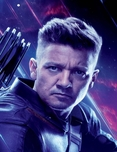
HAWKEYE

FALCON

WINTER SOLDIER

WAR MACHINE
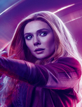
SCARLET WITCH

ANT MAN
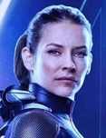
THE WASP

SPIDER MAN

STAR LORD
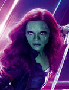
GAMORA

NEBULA
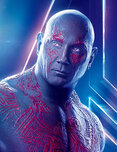
DRAX

GROOT

ROCKET RACCOON

MANTIS

DOCTOR STRANGE

BLACK PANTHER

VALKYRIE
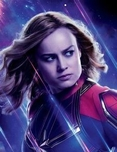
CAPTAIN MARVEL
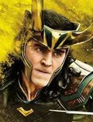
LOKI
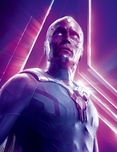
VISION

QUICK SLIVER

ANCIENT ONE

SHANG CHI

NICK FURY
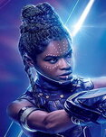
SHURI

RED SKULL

OBADIAH STANE

ABOMINATION

IVAN VANKO
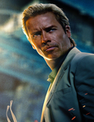
ALDRICH KILLIAN

MALEKITH
LOKI

ALEXANDER PIERCE
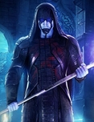
RONAN

EGO
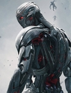
ULTRON

DARREN CROSS

DORMAMMU
ZEMO

ERIK KILLMONGER
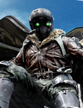
VULTURE

HELA
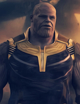
THANOS

GHOST

KAECILIUS

MYSTERIO

TASKMASTER
THÔNG TIN NHÂN VẬT
IRON MAN
“United? Unity isn’t about being the same. It’s about working together. What you can’t calculate, Ultron, is that our differences are our greatest strength.”
| Tên thật: | Anthony Edward “Tony” Stark |
| Năm sinh: | 29/5/1970 |
| Khả Năng: | Thông minh, chiến lược gia tài giỏi, doanh nhân thành đạt, kỹ năng cận chiến và sử dụng các bộ giáp làm công cụ chiến đấu |